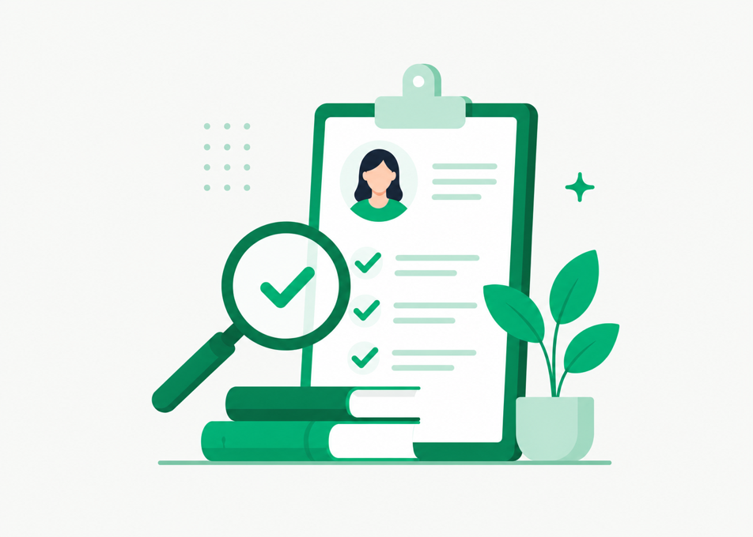

Научный подход Alter
Мы не расширяем базу психологов любой ценой. Мы строим систему, в которой каждый этап поддержки основан на данных и методах с доказанной эффективностью.
Что входит в научный подход
Чтобы психологическая поддержка работала, важно контролировать всю систему: кто попадает на платформу, как сотруднику подбирают психолога, какие методы используются в работе и как отслеживается качество помощи.


Только доказательные методы психологической помощи
Психологи Alter используют методы с доказанной эффективностью. Это помогает сотруднику работать со своими запросами и двигаться к изменениям, которые улучшают качество жизни.
Что такое научно доказанные методы психологической помощи и почему это важно

Что ещё важно для качества психологической помощи
Психологи, которые понимают бизнес
- • не дают радикальных советов вроде «вам стоит уволиться»;
- • учитывают рабочую среду, нагрузку и коммуникации;
- • помогают искать реалистичные решения с учётом ситуации сотрудника.
Качественная психологическая помощь не может стоить «дёшево»
Для бизнеса это риск: сотрудник получает негативный опыт, теряет доверие к поддержке и не возвращается к психологу. Стресс и выгорание остаются, а компания оплачивает сервис, который не снижает риск увольнения.
Из чего складывается стоимость качественной сессииНизкая стоимость сессии → негативный опыт → сотрудник бросает сессии у психолога → стресс остаётся → риск выгорания и увольнения растёт.
Подробнее в статье «Как демпинг разрушает качество корпоративной психотерапии»Специализация на психологической поддержке
Психологическая поддержка — основной продукт и ключевая экспертиза Alter, а не дополнительная опция внутри большого HR-сервиса.
Мы строим поддержку вокруг качества работы психологов: отбираем специалистов, подбираем психолога сотруднику, используем доказательные методы и контролируем работу после старта.
Поэтому бизнес получает не просто доступ к консультациям, а систему поддержки, которая помогает сотрудникам справляться со стрессом и сохранять устойчивость.
Результаты психологической поддержки для бизнеса
Что ещё почитать

{{ infoTitle }}
{{ block.text }}
- ✓{{ li }}